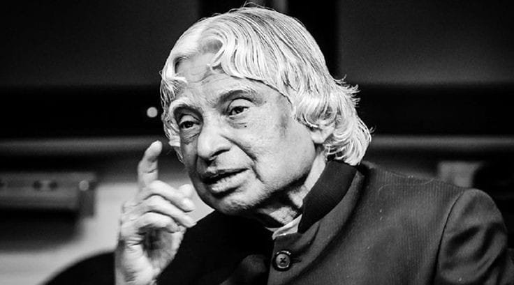

Dr.A.P.J Abdul Kalam
1931-2015

Biography
Look at the sky.we are not alone.
The whole universe is friendly to us and conspires only to give
the best to those who dream and work.
Abdul Kalam was a renowned Indian scientist and the 11th President of India.
Abdul Kalam, also known as APJ Abdul Kalam, was a brilliant scientist and a beloved President of India.
He played a key role in India's nuclear program and made significant contributions to space research.
He was known for his humility, vision, and love for education.
A very simple person who lived an unpretentious lifestyle.
He had a keen interest in literature and wrote poems.
He never married. He always faced media himself for his failures while let others address for the success.
He remained active till the very end. He died while delivering a lecture at the IIM.
Abdul Kalam was a people's person who dedicated his life to serving the nation.
He inspired and encouraged young minds to pursue their dreams and contribute to society.
He believed in the power of education and technology to uplift the lives of people.
His humility and down-to-earth nature made him relatable and loved by the people.
Made by Trupti Ambuskar